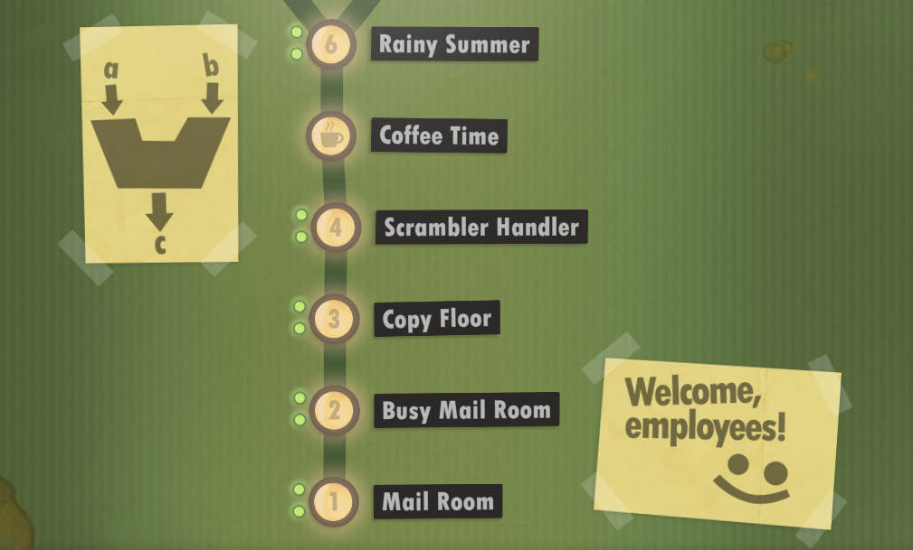
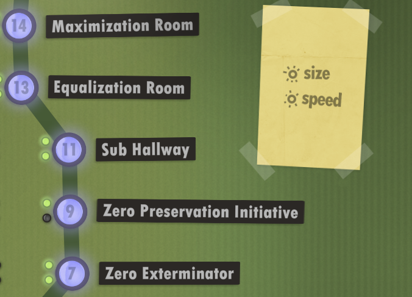
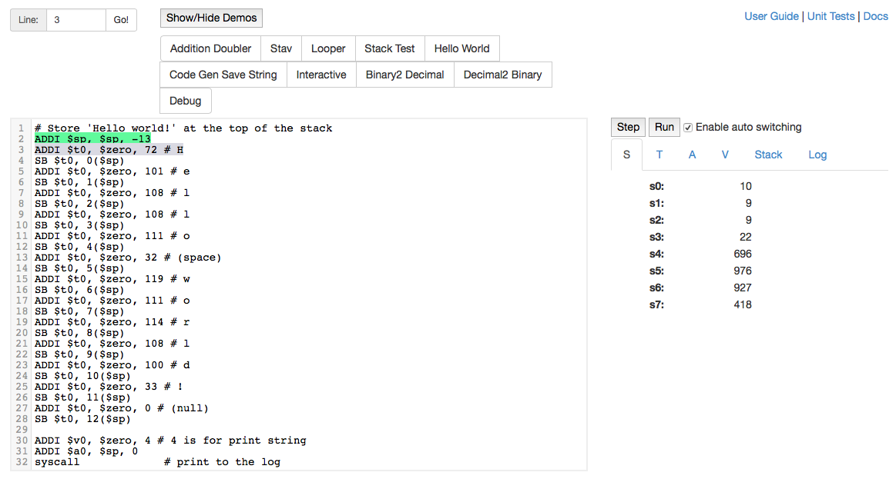
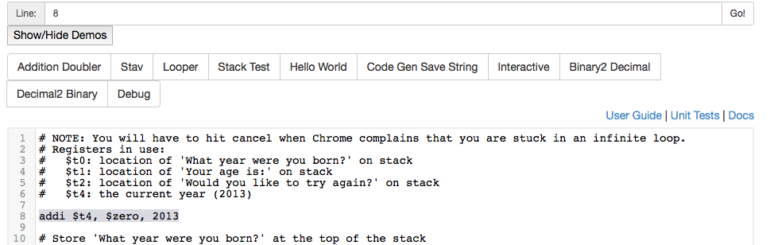
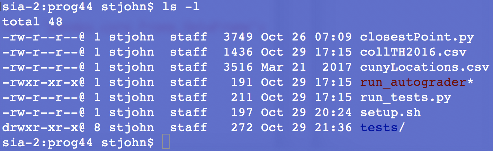
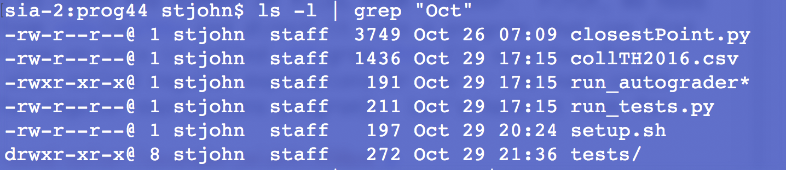
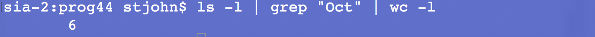

Laboratory Exercise 11
CSCI 127: Introduction to Computer Science
Hunter College, City University of New York
Fall 2025
Learning Objectives:
- Students will understand the concepts of jumps and registers in machine language.
- Students will write programs in Simplified Machine Language: WeMIPS.
- Students will write programs with loops in WeMIPS.
- Students will use Unix Pipe commands to build more complex shell commands.
Software tools needed: web browser and a graphical editor, such as gEdit.
References:
1. Developing Intuition via Human Resource Machine

In today's lab, we will explore a programming language that is very "low level" in that it maps very closely to the actual commands that are used by the computer's processor. To gain intuition on some of the underlying fundamental concepts, we will start with a simple implementation that has only 11 basic commands (that the developers describe as following the Harvard Architecture with a single accumulator).
To get started:
- We have a license for the full version of Human Resource Machine for the lab computers. Check out a computer while in the lab, and open "Human Resource Machine." Turn down (or off) the volume since the music can be a bit much.
- Download a limited version (free but does not save progress) or full version (saves progress but need to purchase) to your machine.
Open the program, choose your avatar, and proceed to the first level.
Years 1-6: Jumps & Addition

Work through the first six levels:
- Year 1: Mail Room: Introduces two commands:
inboxandoutboxwhich picks up an item from the inbox and places an item on the outbox, respectively. These are similar to ourinput()andprint()functions in Python. - Year 2: Busy Mail Room: This level introduces
jumpwhich allows you to repeat blocks of code or "loop." - Year 3: Copy Floor: Introduces the
copyfromcommand that allows you to pick up values from the floor (aka "the registers" or places you can store values you would like to use in your computation). - Year 4: Scrambler Handler: The companion command
copytois introduced. It allows you to place values on marked regions of the floor (e.g. place values in specific registers). - Year 5: Coffee Time: (video, no coding)
- Year 6: Rainy Summer: Introduces
add. It's a very limited version of addition in that you can only add something on the floor (in a register) to what you're holding, and the result replaces what you're holding. While limited, it echos the restrictions that you find in most machine languages.
The first 6 years introduced 6 commands (out of the 11 total in Human Resource Machine) that allow you to input, output, jump to other parts of your program, store and retrieve values, and perform a limited addition. In Section 3, we will see the corresponding commands in the MIPS machine language.
Years 7, 9, 11, 13-14: Conditional Branching & More Arithmetic

We're only doing the main branch of the program, but if you're interested your are welcome to do the optional years (such as 8, 10, and 12).
- Year 7: Zero Extermination: To be able to write more complex programs, we need to be able to make decisions about what to do next. The simplest command for this is
jump if zerothat allows us to only jump, or branch, if what we're holding is 0. - Year 9: Zero Preservation Initiative: No new commands on this level, but an interesting programming challenge of doing the opposite of the previous level.
- Year 11: Sub Hallway: Introduces
sub. It's a very limited version of subtraction, echoing the restricted version of addition. But while limited, it also echos the restrictions that you find in most machine languages. - Year 13: Equalization Room: Comments are introduced to make it easier to remember what's going on as the programs get larger.
- Year 14: Maximization Room: Introduces another branching command:
jump if negativeto make it a bit easier to compare items.
The goal of this part of the lab is to build up understanding of branching (e.g. the different types of jump commands) and the use of registers (the values stored on the floor). We are only doing these challenges for the lab today, but you can keep working through Human Resource Machine if you're intested!
2. Simplified Machine Language
We will use an emulator, WeMIPS, to emulate what a machine-level language would do for a popular class of computer processors, MIPS. Processors with MIPS are a Reduced Instructor Set Computer (RISC), meaning they have fewer different types of instructions that the processor knows (and thus fewer that have to be implemented, leading to faster processors).
Let's start by looking at a program that will print "Hello World":

If you would like to follow along, using the emulator (click on this link to open in a new tab or use inline below), toggle the "Show/Hide Demos" button and then click on the "Hello World" demo:
Just as we did with PythonTutor, we can "step" or go through the code line-by-line to see what it does:
- The first line is a comment. Like in Python, everything after a '#' on a line is ignored by the simulator.
- The next line says to add -13 to $sp, which stands for the stack pointer. The stack is a region of memory where we can store information (it is very common-- more details in future computer science courses).
We are using 13, because to allow enough room to store the message "Hello World" (plus a null character to signal the end of the string). - The next line, SB $t0, 0($sp) moves the number we stored to the register $t0 to the stack pointer address (with 0 offset). Since it is moving a byte of information, SB stands for "Store Byte".
- We repeat with each letter in our message, loading it to register $t0 and then moving the contents of that register to the next empty memory location. This contninues until the entire message is loaded.
- Next, we place 4 into the register $v0. That register is used to tell the simulator what type of system call we would like to make. 4 is used for printing strings.
- Next, we place the location of the start of our message in $a0 (that's where the system looks for the location of the string to print).
- Lastly, we call syscall. Since we have loaded 4 into $v0, it will print whatever string starts at the memory location in $a0.
- If the messages are not displaying, toggle to the "Log". You will see the message in green on the stack.
Try changing the program in the WeMIPS window to print out "Hello!!!". Once it does, copy the program into a text window:
#Name: YOUR NAME HERE
#Email: YOUR EMAIL HERE
#My first MIPS program that prints: Hello!!!
... put your machine language program here ....
3. Loops in Machine Language
To create loops in our machine language, we use two additional instructions:
- BEQ or "Branch When Equal" which, when two values are equal, lets you go to a different part of the program (which you specify), and
- J or "J" which always go to a different part of the program, and is incredibly useful for setting up loops.
#Sample program that loops from 10 down to 0
ADDI $s0, $zero, 10 #set s0 to 10
ADDI $s1, $zero, 1 #use to decrement counter, $s0
AGAIN: SUB $s0, $s0, $s1
BEQ $s0, $zero, DONE
J AGAIN
DONE: #To break out of the loop
- Set $s0 to 10.
- Set $s1 to 1.
- Subtract $s1 from $s0 and store result in $s0 (i.e. $s0 = $s0 - $s1).
- If $s0 equals 0, go to line 6.
- Else, go back to Line 3 and repeat.
- Program ends here.
This program counts down from 10 to 0. How could you modify it to count from 1 to 10? When you have it running, see the homework page.
(Hint: store the value 10 in a register to use in the comparison)
Challenge
As a final machine language challenge, modify the "Interactive" demo (the first lines are in the image above) to use the current year when computing the ages:

Click on "Show/Hide Demos" and then click on "Interactive:
A Note on Grading Simplified Machine Language
We're going to use just a few commands that move values into registers (physical memory locations), do simple arithmetic, and jump (or branch) to another part of our program. There are many commands that can be used in the full MIPS machine language. We are working with only a few of them:
ADD, ADDI, ADDIU, BEQ, J, SB, SUB, SUBU, syscall
The general format for simplified machine language programs is:
#Name: YOUR NAME HERE
#Email: YOUR EMAIL HERE
... Put your code goes here...
To submit your program for grading:
- Run and debug your program using WeMIPS
- Once it works, copy the text into a text editor and save. Make sure your file has a comment at the top with your name.
- Drag and drop the text file onto the gradescope page for the given program.
4. More on Unix: Using Pipes
In Lab 6, we introduced making short programs, or scripts, of Unix commands. In this lab, we introduce a very useful construct to let you glue together simple commands to perform more complex actions.
The command '|' is called a pipe since it takes the data flowing out of a command and directs it to flow into the next command, much like a pipe directing the flow of water.
For example, if you type:
ls -l

showing 7 files, 6 of which were created in October. Names with '/' after them are directories or folders. '*' indicates files that can be executed (see Lab 6 for how to change the permissions of a file).
Let's use a pipe to count the number of files from October. First, we need to take the output from ls and direct it into a program that can find patterns. A popular one on Unix is called grep (it searches for patterns, which are also called regular expressions or 're'-- the name comes from global search for regular expressions program). Let's have it look for 'Oct':
ls -l | grep "Oct"Note that between the ls -l and the grep "Oct" is a pipe ('|') that directs the outflow from the ls command to the inflow of the grep command:

We can use the pipe to take the output of the grep command and send it to a program that counts the number of lines. This program, wc, counts characters (option -m), words (option -w), and lines (option -l). We'll use the -l option to count lines:
ls -l | grep "Oct" | wc -lwhich gives:

the number of files in the directory that were last modified.
How could you make a script that counted the number of .py files in the directory?
When you have the answer, put the single line into a script. Remember to use Unix end-of-lines, since gradescope will run what you submit as a Unix script and will be very confused if you have non-Unix (i.e. Windows-style) end-of-lines. See homework.
What's Next?
You can start working on this week's programming assignments. The homework page has problem descriptions, suggested reading, and due dates next to each problem. You should aim to finish the programs in the next week, although the deadlines are several weeks out, to give a buffer just in case.